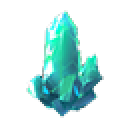

- 特性
- 特产
- 矿物
- 怪物
尚未选择收集要素
风神瞳
岩神瞳
地灵龛-蒙德
地灵龛-璃月
 宝箱-蒙德
宝箱-蒙德
 宝箱-璃月
宝箱-璃月
 水晶矿-璃月
水晶矿-璃月
 白铁矿-璃月
白铁矿-璃月
 白铁矿-蒙德
绝云椒椒
霓裳花
白铁矿-蒙德
绝云椒椒
霓裳花
 琉璃百合
夜泊石
石珀
钩钩果
嘟嘟莲
落落梅
琉璃百合
夜泊石
石珀
钩钩果
嘟嘟莲
落落梅
 塞西莉亚花
塞西莉亚花
 慕风蘑菇
慕风蘑菇
 风车菊
风车菊
 蒲公英籽
遗迹守卫
蒲公英籽
遗迹守卫
 遗迹猎者
遗迹猎者
 大型丘丘人
大型丘丘人
 深渊法师
深渊法师
 债务处理人
债务处理人
 雷莹术士
雷莹术士

水晶矿-蒙德